教你炒股票27： 盘整背驰与历史性底部
2007-02-02 15:11:27
- 第二个中枢后就产生背驰的情况，一般占了绝大多数的情况，特别在日线以上的级别，这种就几乎达到90%以上，因此，如果一个日线以上级别的第二个中枢，就要密切注意背驰的出现。
- 盘整背驰最有用的，就是用在大级别上，特别是至少周线级别以上的，这种盘整背驰所发现的，往往就是历史性的大底部。
- 以万科为例子，季度图上的第三段，在月线上，可以找到针对月线最后中枢的背驰段，而这背驰段，一定在季度线的背驰段里，而且区间比之小，把这个过程从月线延伸到周线、日线、30分钟、5分钟、1分钟，甚至是每笔成交，这区间不断缩小
|
趋势，一定有至少两个同级别中枢，对于背驰来说，肯定不会发生在第一个中枢之后，肯定是至少是第二个中枢之后，对于那种延伸的趋势来说，很有可能在发生第100个中枢以后才背驰，当然，这种情况，一般来说，一百年见不到几次。第二个中枢后就产生背驰的情况，一般占了绝大多数的情况，特别在日线以上的级别，这种就几乎达到90%以上，因此，如果一个日线以上级别的第二个中枢，就要密切注意背驰的出现。而在小级别中，例如1分钟的情况下，这种比例要小一点，但也是占大多数。一般4、5个中枢以后才出现背驰的，都相当罕见了。
如果在第一个中枢就出现背驰，那不会是真正意义上的背驰，只能算是盘整背驰，其真正的技术含义，其实就是一个企图脱离中枢的运动，由于力度有限，被阻止而出现回到中枢里。
一般来说，小级别的盘整背驰，意义都不太大，而且必须结合其位置。如果是高位，那风险就更大了，往往是刀口舔血的活动；但如果是低位，那意义就不同了，因为多数的第二、三类买点，其实都是由盘整背驰构成的，而第一类买点，多数由趋势的背驰构成。
一般来说，第二、三类的买点，都有一个三段的走势，第三段往往都破点第一段的极限位置，从而形成盘整背驰。注意，这里是把第一、三段看成两个走势类型之间的比较，这和趋势背驰里的情况有点不同，这两个走势类型是否一定是趋势，都问题不大，两个盘整在盘整背驰中也是可以比较力度的。
这里，先补充一个定义：就是在某级别的某类型走势，如果构成背驰或盘整背驰，就把这段走势类型称为某级别的背驰段。
盘整背驰最有用的，就是用在大级别上，特别是至少周线级别以上的，这种盘整背驰所发现的，往往就是历史性的大底部。
配合MACD，这种背驰是很容易判断的。这种例子太多，例如000002，谁都知道该股是大牛股，但这牛股的底部，如果学了本ID的理论，是谁都可以发现的。请看该股的季线图，也就是三个月当成一个K线的图。
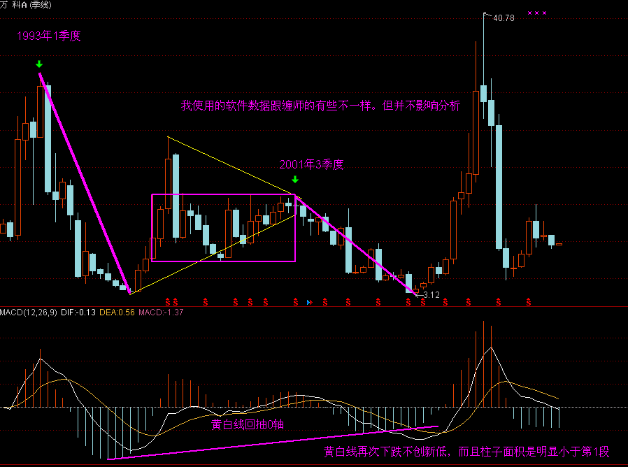
1993年第一季度的36。7元下跌到1996年的第一季度的3。2元，构成第一段，刚好前后13季度，一个神奇数字；1996年的第一季度然后到2001年第三季度的15。99元，构成第二段，一个典型的三角形，中枢的第二段出现三角形的情况很常见，前后23季度，和21的神气数字相差不大；2001年第三季度下跌到2005年的第三季度的3。12元，前后刚好17周，神奇数字34的一半，也是一个重要的数字。第一段跌幅是33.5元，第三段是12.87元，分别与神奇数字34和13极为接近。因为13的下一个神奇数字是21，加上前面说过的17，都不可能是第三段的跌幅，因此，站在这种角度，万科的2.99元附近就是铁底了。
不过这种数字分析意义不大，最简单的判断还可以用MACD来，第三段跌破第一段的3.2元，但MACD明显出现标准的背弛形态：回抽0轴的黄白线再次下跌不创新低，而且柱子的面积是明显小于第1段的，一般来说，只要其中一个符合就可以是一个背弛的信号，两个都满足就更标准了。从季度图就可以看出，万科跌破3.2元就发出背弛的信号。而实际操作中，光看季度线是不可能找到精确的买点的，但对大资金，这已经足够了，因为大资金的建仓本来就是可以越跌越买，只要知道其后是一个季度级别的行情就可以了。而对于小资金来说，这太浪费时间，因此精确的买点可以继续从月线、周线、日线、甚至30分钟一直找下去，如果你的技术过关，你甚至可以现场指出，就在这1分钟，万科见到历史性大底部。因为季度线跌破3.2元后，这个背驰的成立已经是确认了，而第三段的走势，从月线、周线、日线等，可以一直分析下去，找到最精确的背驰点。
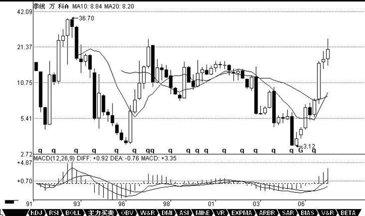
学过数学分析的，都应该对区间套定理有印象。这种从大级别往下精确找大级别买点的方法，和区间套是一个道理。
以万科为例子，季度图上的第三段，在月线上，可以找到针对月线最后中枢的背驰段，而这背驰段，一定在季度线的背驰段里，而且区间比之小，把这个过程从月线延伸到周线、日线、30分钟、5分钟、1分钟，甚至是每笔成交，这区间不断缩小，在理论上，甚至可以达到这样一种情况，就是明确指出，就这一笔是万科历史底部的最后一笔成交，这成交完成意味着万科一个历史性底部的形成与时代的开始。
当然，这只是最理想的情况，因为这些级别不是无限下去的，因此，理论上并不能去证明就是一个如极限一样的点状情况的出现，但用这种方法去确认一个十分精确的历史底部区间，是不难的。
推而广之，可以证明缠中说禅精确大转折点寻找程序定理：
定理：某大级别的转折点，可以通过不同级别背驰段的逐级收缩范围而确定。
换言之，某大级别的转折点，先找到其背驰段，然后在次级别图里，找出相应背驰段在次级别里的背驰段，将该过程反复进行下去，直到最低级别，相应的转折点就在该级别背驰段确定的范围内。
如果这个最低级别是可以达到每笔成交的，理论上，大级别的转折点，可以精确到笔的背驰上，甚至就是唯一的一笔。（当本ID十几年前发现这个定理时，有一个坏毛病，总是希望在实际操作上也精确到笔，因此还发明了其他古怪的看盘方法，不过这些其实都意义不大，1分钟的背驰段，一般就是以分钟计算的事情，对于大级别的转折点，已经足够精确了，对大资金，基本没什么用处。）
要理解本章，如果忘了的，最好把高数里的区间套定理复习一下，这个思路是一样的，当然，由于级别不是无限可分的，不可能达到数学上唯一一点的精度。各位有时间可以参考一下，600640、000001、000006、000009、000012、600643的季度图，看看历史底部是怎么形成的。当然，只有特别老的股票才可以用季度图。而月线图的，看600663、一个标准的例子。
600640、000001季度图
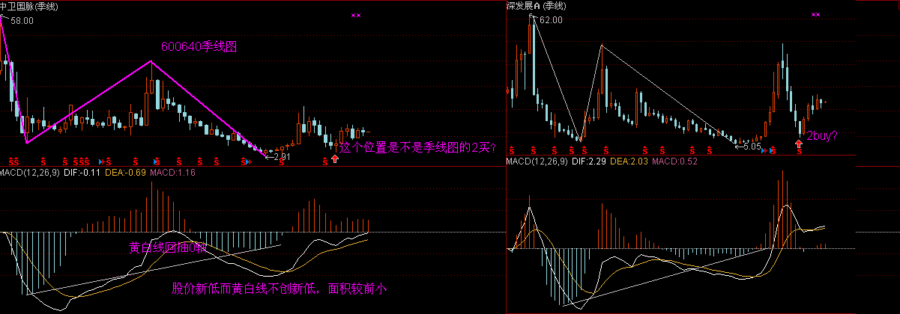
而月线图的，看600663一个标准的例子：
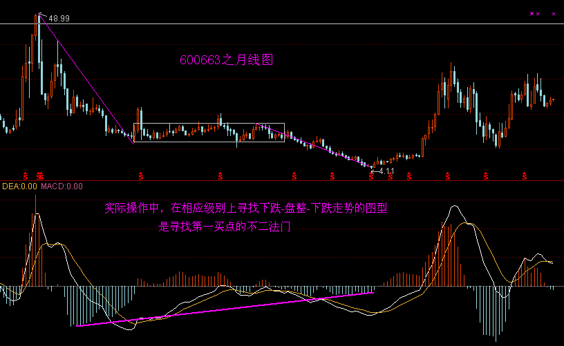
600685 第二买点的确认方法（区间套）
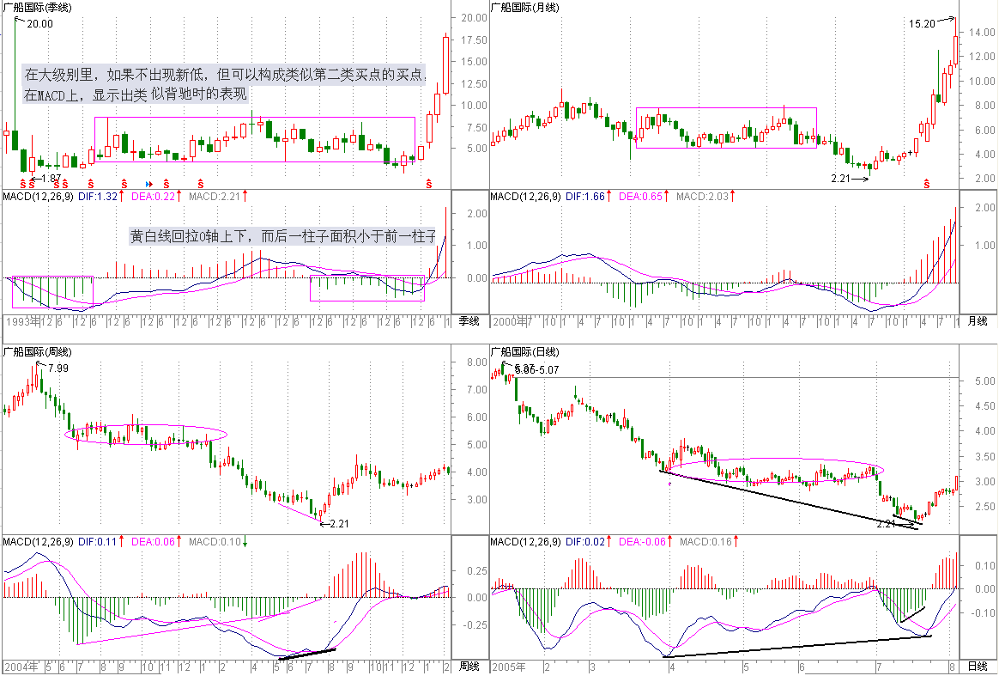
上面说的是背驰构成的买点，注意：
第一类买点肯定是趋势背驰构成的，而盘整背驰构成的买点，在小级别中是意义不大的，所以以前也没专门当成一种买点，但在大级别里，这也构成一种类似第一类买点的买点，因为在超大级别里，往往不会形成一个明显的趋势，这也就是以前回帖曾说过的，站在最大的级别看，所有股票都只有一个中枢，因此，站在大级别里，绝大多数的股票都其实是一个盘整，这时候就要用到这因为盘整背驰而形成的类第一类买点了。这个级别，至少应该是周线以上。
类似的，在大级别里，如果不出现新低，但可以构成类似第二类买点的买点，在MACD上，显示出类似背驰时的表现，黄白线回拉0轴上下，而后一柱子面积小于前一柱子的。一个最典型的例子，就是季度图上的600685，2005年的第三季度的2.21元构成一个典型的类第二类买点。在实际操作中，2.21元的相应区间的寻找，也是按上面级别逐步往下找背驰段的方法实现。
这一课，把找大牛市底部的一个方法说了，这个方法足以让你终生受用。随着以后股票越来越多，老股票越来越多，这种方法将在下一轮大牛市中大放异彩，这大牛市搞不好是30年以后的事情了，30年以后，希望你还能记得这一课。当然，如果按照周线级别，那不用等30年了。不过，周线找出来的，不一定是历史性大底，可能就是一个比较长线的底部。如果把这种方法用在日线上，也是可以的，但相应的可靠性就不是那么绝对了。
（待续）
补充一个本ID理论的学历标准
精通找出各级别中枢的，是幼儿圆毕业
精通分别中枢的新生、延伸、扩展的，是学前班毕业
精通分辨盘整背驰与背驰，躲过盘整背驰转化为第三类买卖点的是小学毕业
各位自己对照一下。
缠中说禅 2007-02-02 15:19:09
今天走势十分正常，昨天已经说了，1分钟的背驰和上次的不会一样，都一样还叫走势吗？现在，就让那些看所谓技术的人喊跌破颈线砍仓去吧，市场永远是智慧赚愚蠢的钱，他们不砍仓，钱从哪里来。按照本ID理论的，这种走势是最好的，比上涨还容易挣钱，关键是卖点要走，看准了买点才进。下周会有一个5分钟的买点出现，抓住了10%的利润是跑不掉的。整个周线的中枢还在形成中，这种震荡将不断，是练习本ID理论的绝佳场所，好好练习，这个场所可是用钱堆出来的。至于本ID所说的个股，本ID一样按照理论来操作，绝对不会举着，那是傻瓜的作法，震荡才能产生利润，才能把成本降下来。
缠中说禅 2007-02-02 15:31:56
[匿名] 乐土 2007-02-02 15:29:26
缠师,谢谢! 再请教:中信证券600640 今天是30分钟假背池吗?还要象猎人等背池买入点?谢
===
背驰就是背驰，没有什么假背驰，错了是因为你判断错了，最多错误都是发生在把盘整背驰转化为第三类买卖点给搞成背驰了。能把这关过了，你的水平可以上初中了。
缠中说禅 2007-02-02 15:47:13
[匿名] 惑 2007-02-02 15:42:33
请说一下中国人寿好么
==
这以前早说过了，去形成下跌的第二个中枢。该股在49元那次上涨背驰出来后，本ID就从来没提过了，因为该股要等待一个下跌的背驰出现，出现以后就可以重新介入了，那次，行情就小不了了，本ID也在等着，希望能见到30元附近的价位。中线，N年以后看，复权上100是没问题的，不过要耐心等待背驰的出现。
缠中说禅 2007-02-02 15:49:51
[匿名] 夜雨 2007-02-02 15:44:21
美女姐姐，我总结一下今天的操作，卖都是对的，没找好买点，买都是错的，一定要看清楚了才下手，可今天买点好难找啊，
==
谁告诉你每天都一定有买点的？在强烈的趋势中，1分钟的买点有时候2、3天才有一个。不过5分钟的买点正形成中，对于大资金以及好股票，其实今天就可以开始部分介入了。
缠中说禅 2007-02-02 15:59:51
[匿名] 乐土 2007-02-02 15:57:57
缠师:我想既然学您的理论,就应该去另外选一只去磨练.您看中信600640或者深发展可以吗?我想象猎人一样等待第一买点的到来.今天,我几次想买,但想到与缠中说禅买点原则不符合,才没冲动.谢
==
不熟练的时候，最好找一些刚突破底部的，业绩不差的，这样安全点，
缠中说禅 2007-02-02 16:09:29
[匿名] 第一次实战 2007-02-02 15:55:45
今天终于鼓起勇气，按照lz理论进行了第一次实战。
目标是宝钢，15分钟K线下午两点出现明显背驰，买入后宝钢马上强烈反弹，2％的幅度。转而观察低级别5分钟，1分钟K线，是否有卖点出现。可虽说无卖点出现，但是由于大盘忽然转弱，走势急转而下（5分钟1分钟K线均无出现卖点），5分钟再次出现男上位缠绕。按照lz所示，应严守纪律退出，这是是正好盈亏为0。但是初次实战，犹豫了一下，走势急转下跌，－2％，于是坚定退出。再次等待机会。
结语：任何走势都是无定的，严守纪律，给操作戴套。
===
你知道你的操作为什么有问题吗？首先，你对背驰的判断是错误的，宝钢15分钟根本没有背驰，更谈不上标准。黄白线都没拉回去，怎么可能有背驰？该背驰是典型的1分钟背驰，3波拉上去后就是一个完美的卖点，为什么？因为这卖点要看次级别的，而1分钟下面看不到，所以一般来说，3波上去就可以走，而且刚好碰到250的1分钟均线，最好的对冲出逃机会了。
好好总结，继续来。
注意，是涨的时候形成卖点，而不是跌下来再走。宁愿卖早了，不要卖晚了。特别是对冲。
缠中说禅 2007-02-02 16:40:56
[匿名] 小鸟 2007-02-02 16:23:54
请问我的理解对不对呀？
妹妹，600331在5分钟上在13：15到14：00只有一个中枢，所以还没形成趋势，需要继续下跌形成第二个中枢，有了趋势才能和前一个趋势对比，是不是这样呀？
===
5分钟中枢在昨天就形成了，010935到011410，，010935前面是一段，011410后面是一段，这两段就可以比较了。
缠中说禅 2007-02-02 16:43:56
[匿名] 小注 2007-02-02 16:40:50
禅主601628是15分钟黄白线拉回0轴一次！是否15分钟背弛！
==
这是一个条件，还有必要看其后股价新低后是否创新低，更精确的判断，可以参考5分钟的图。也就是这个背驰段什么时候结束。
缠中说禅 2007-02-02 16:55:18
周末了，找一个小时去找找自己吧，找不到自己，又怎能不让股票所转？转股票，而不要被股票转。
先下，周日中午开音乐会，再见。
[匿名] frogleg 2007-02-28 19:55:50
唉，缠老师的理论是正确的，绝对买点卖点也是精确的，但都是建立在完成的趋势上，没发生之前依旧要预测，这预测还就要用小级别和背离，所以风险依旧。
每日解盘（2007-02-02 15:19:09 ）
缠中说禅：
2007-02-02 15:19:09 今天走势十分正常，昨天已经说了，1分钟的背驰和上次的不会一样，都一样还叫走势吗？现在，就让那些看所谓技术的人喊跌破颈线砍仓去吧，市场永远是智慧赚愚蠢的钱，他们不砍仓，钱从哪里来。
按照本 ID理论的，这种走势是最好的，比上涨还容易挣钱，关键是卖点要走，看准了买点才进。下周会有一个5分钟的买点出现，抓住了10%的利润是跑不掉的。
整个周线的中枢还在形成中，这种震荡将不断，是练习本ID理论的绝佳场所，好好练习，这个场所可是用钱堆出来的。
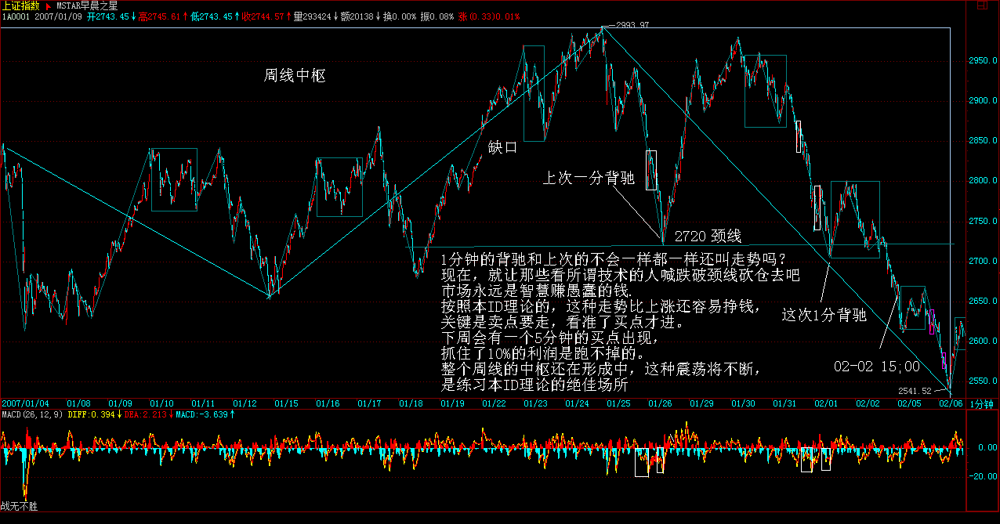
至于本ID所说的个股，本ID一样按照理论来操作，绝对不会举着，那是傻瓜的作法，震荡才能产生利润，才能把成本降下来。
每日解盘（2007-02-05 15:18:33 ）
缠中说禅：
2007-02-05 15:18:33 大盘的走势没什么可说的，周线第一段的探底中，这应该在最多是30分钟的背弛后结束。目前的走势很简单，就是等待一个5分钟的背弛把30分钟MACD拉回0轴。
这5分钟的背驰很快也将出现，明天就很有可能，这都无须预测，看图就可以。今早的只算是宣告进入背弛段，精确的背弛点还要看1分钟级别的走势。
个股方面没什么可说的。本ID有的个股都走得比大盘强，这都是有目共睹的，就不说什么了，按图操作吧。
明天将有一篇厉害文章，叫“下一目标：摧毁基金”
本ID目前正在一个个股上实验着，看看有没有可能。
最近本ID正逐步建仓000938，刚进去，货不多，以前90多元抛的，现在看着便宜，就阻击一下吧，注意该股基本面上有坏消息，大家都等着坏消息出来吃货，技术不好的，就别碰了。
每日解盘（2007-02-06 15:12:35 ）
缠中说禅：
2007-02-06 15:12:35 今天的走势十分标准规范，只要对本ID的理论有一点了解的，都不难找到这个5分钟背驰的底部。目前的事情很简单了，5分钟背驰，一个大的阻力就是2720，这是上次的低点，如果能上去，那周线的第一段就不会演化成下跌的趋势，一个2720上下的周线中枢将逐步形成，否则，就有在下面形成下跌的第二个中枢的可能，这样走势压力就比较大了。但即使这样，只会导致30分钟或15分钟回抽后制造一个比这次5分钟更大级别的背驰，那次的回拉，级别就更大了。
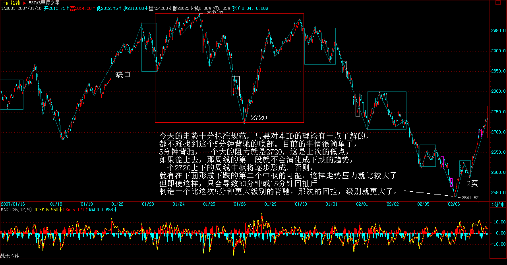
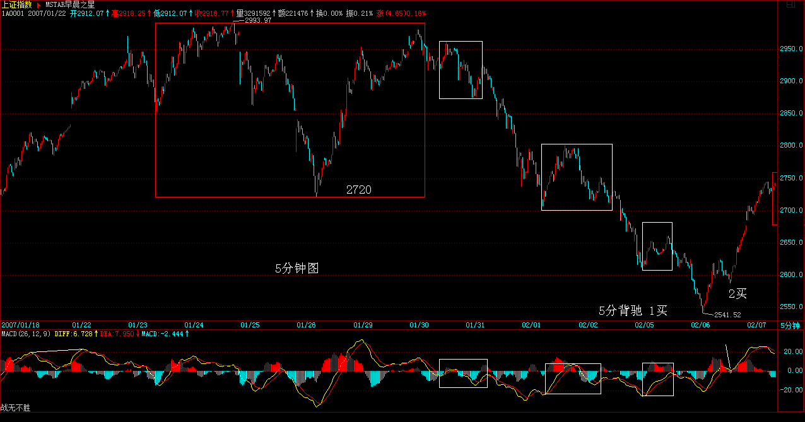
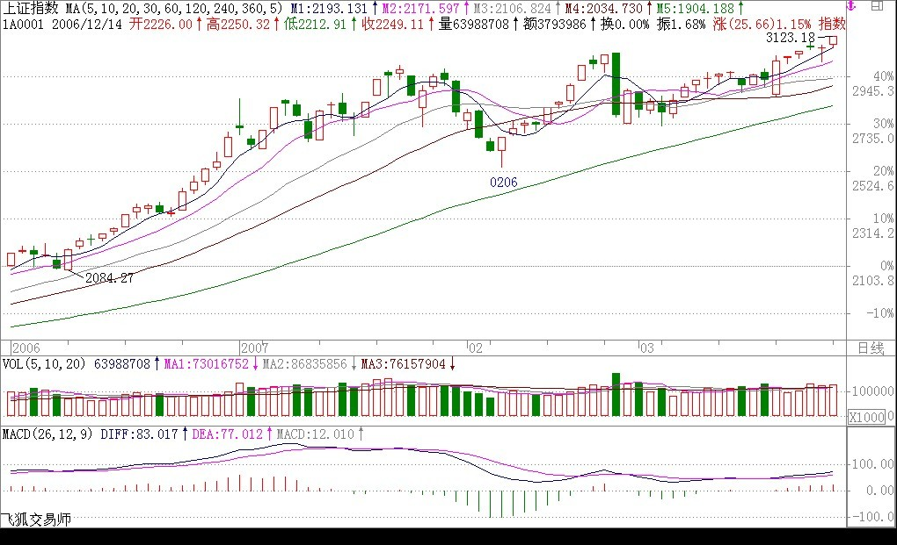
个股没什么可说的，关键是操作的技术。这几天，本ID说过的股票里最极端的就是777和999了，如果你的技术能让你在这几天在999上的获利不比777差太远，那你的技术就有点谱了。
精通本ID的理论后，涨跌的分别就会消失，在里脑子里，只有买点卖点，没什么涨跌，达到这种境界，就算初步有成了。
罗锅2007-02-02 10:32:31 [举报]
[匿名] 小鸟
2007-02-02 10:27:29
1分钟背驰了！
BBBBBBBBBB
不算！不破低就是1分钟的第二类买点(注：理解错误）！破了就是5分钟的第一类买点！
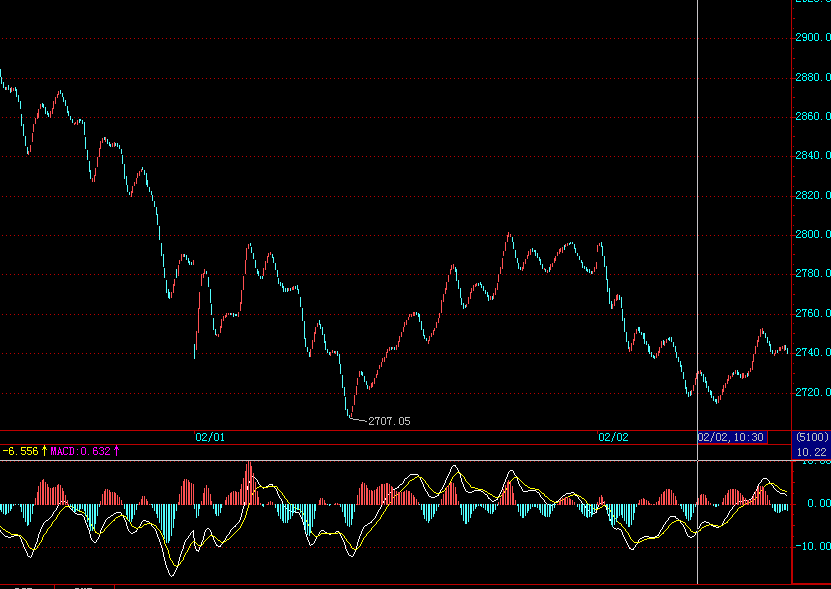
罗锅2007-02-02 10:53:39 [举报]
为什么不破底呀！不破不立呀！数学妹妹说过的
罗锅2007-02-02 11:29:02 [举报]
[匿名] 路过
2007-02-02 11:26:03
[匿名] 路过
2007-02-01 22:06:55
明日大盘，低开低走，主力全天水下运作，二次探低，下午发力，上海成交过千亿，大涨，周线翻红。路人，忍不住说几句，技术上的东西很简单，心态是第一位的。
BBBBBBBBBBBBBBB
大纱帽！这还用你说吗？今天早上开盘一定跌！看5分钟图回抽0轴还要往下跌一波就知道了！上海成交不可能过千亿！下午最好破2700！俺需要5分钟的背驰！！
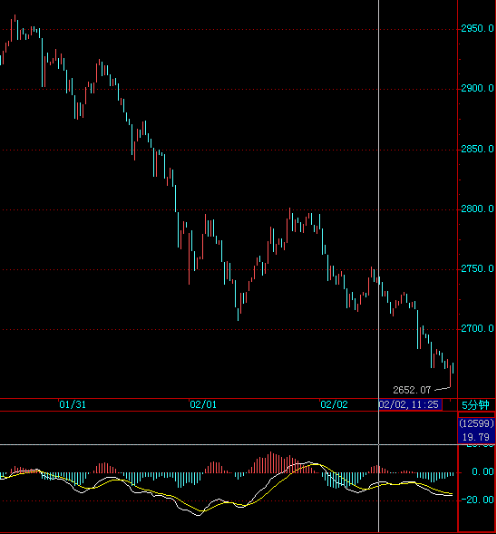
罗锅 2007-02-02 12:08:28 [举报]
[匿名] 小鸟
2007-02-02 12:05:14
罗锅，我认为昨天11点出现的第一买点。
BBBBBBBBBBB
那是1分钟的！！现在就等5分钟的背驰啦！！上面说啦！！不破底就是1分钟的第二买点！破了就是5分钟的第一买点！当然前提是要有背驰！今天下午就知道啦！最好破掉！不破反而不好！！！1分钟在这里搞一个三角形！那下周还要大跌一次！！
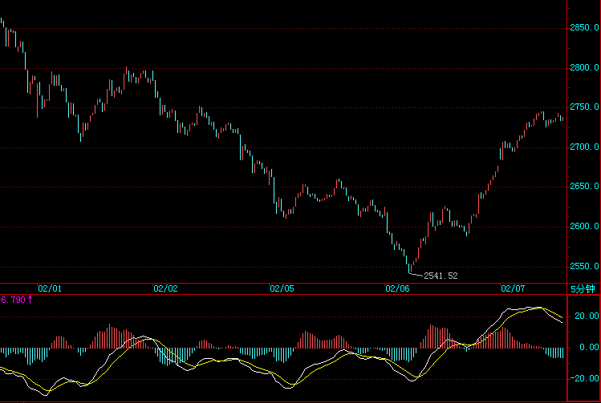
外科医生2007-02-02 14:14:58 [举报]
罗班长真厉害
5分钟背驰
罗锅2007-02-05 14:10:56 [举报]
俺太厉害啦！早上就说下午还要打一波！！上午那个背驰段还没有走出两个中枢！这次可要注意啦！看看是不是真的 背驰啦！大家准备子弹呀！俺现在只有刚才出000998的一点钱啦！！也时刻准备着啦！
缠中说禅：2007-02-02 15:39:15
[匿名] 罗锅 2007-02-02 15:36:27
数学妹妹！！！俺要大红花！！！俺今天连盘整背驰都没骗过俺！！！俺可以上初中了吗？？？
俺我的现场评论！！！
[匿名] 罗锅 2007-02-02 14:19:55
这一下很关键！！！如果拉不起来就是第三类卖点！！！因为数学妹妹说过啦！！！盘整背驰有可能演化成第三类的买卖点！！！这一定要看清楚！！！
========
你小学毕业了，以后虚心点，后面的路长着了。
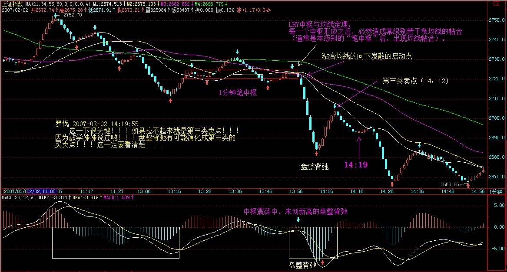
罗锅2007-02-05
14:18:42 [举报]
注意这波下来破底！不要急！
罗锅2007-02-05
14:41:40 [举报]
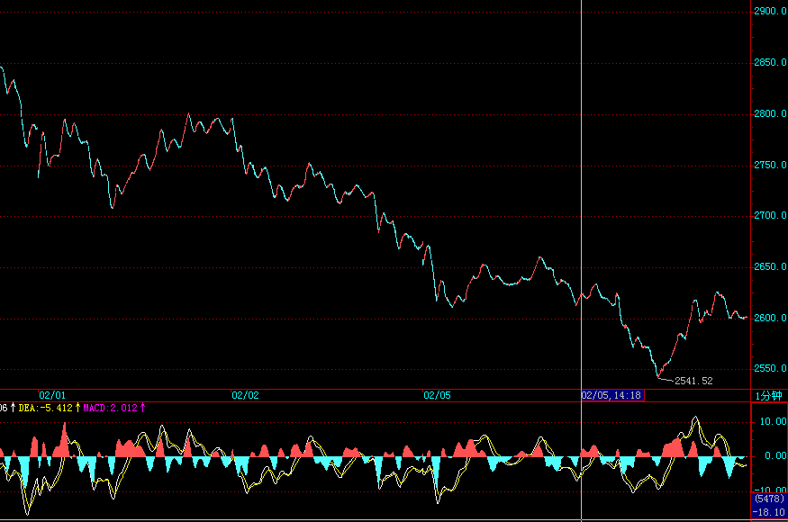
大盘应该破一次驰呀！
罗锅2007-02-06 10:18:35 [举报]
大盘1分钟背驰还没有出现！别急！不过俺的股票都好！全满仓啦！
罗锅2007-02-06 10:37:48 [举报]
不管啦！！满仓999！5分钟背驰！1大盘也快啦！冲！
罗锅2007-02-06 11:04:05 [举报]
数学妹妹的理论太牛啦！牛！1大盘今天真的反弹啦！不过注意卖点呀！从现在开始就要注意卖点啦！！！特别是对冲的
罗锅2007-02-06 13:37:19 [举报]
1分钟受阻！！熬过还有一波！看14点！
罗锅2007-02-06 13:45:03 [举报]要跳1波！看14点以后！
罗锅2007-02-06 14:18:40 [举报]
数学妹妹的理论太牛啦！第二类买点！！太牛啦！救命呀！
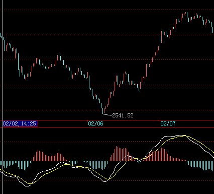
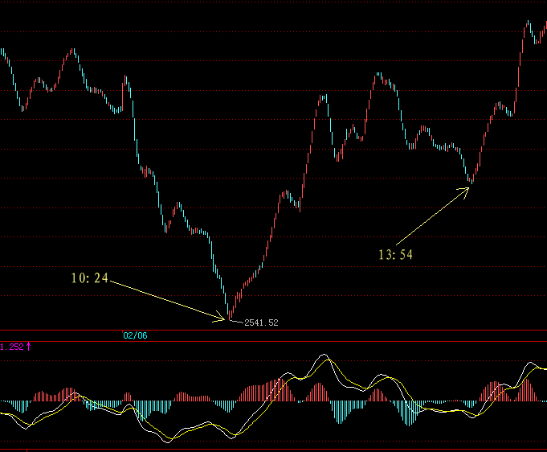
缠中说禅：
2007-02-06 16:52:47 作业
今天就用5分钟与1分钟的配套分析，把这次5分钟的背驰分析清楚。
这个问题，在实战中很多这里的人都当下找出来了，但事后分析一下，复一下盘，还是有意义的。
下了，再见。
晚上9点公布答案。
缠中说禅：
2007-02-06 22:14:35
公布作业答案，各位请参考：
上次因一个5分钟的顶背弛创造出2980点的高位，从该位置开始，是一个5分钟级别的下跌过程。共形成三个下跌的中枢：第一个1301055到1301345，第二2011105到2021110，第三2051005到2051330。
其中第二个中枢，是跌破一个大的30分钟以上级别中枢的次级别回拉，构成一个第三类卖点。
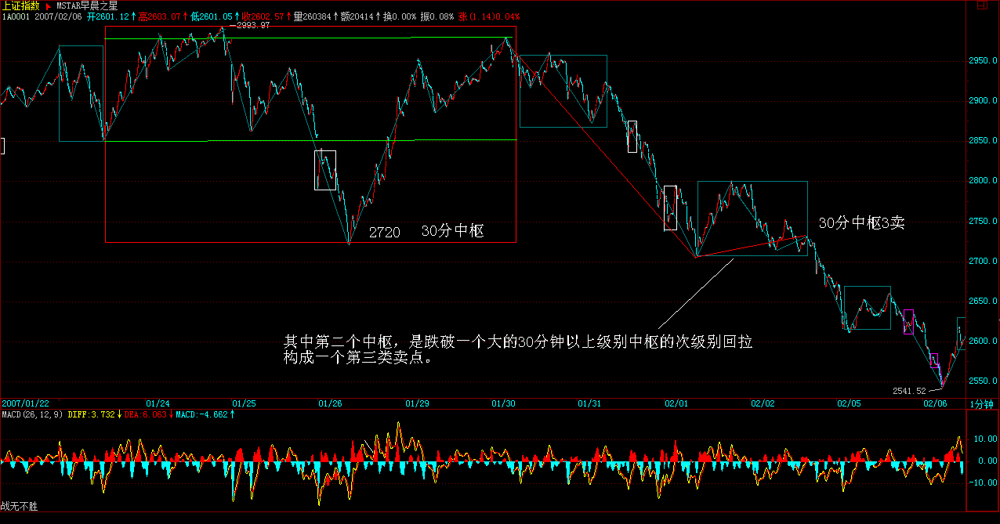
而从MACD开，从第二个中枢开始的一段，与从第一中枢开始的一段，力度上也没有特别的减少(娇注：看MACD上回来0轴后的下跌黄白线的斜率和速度），所以这时候就是特别小心会产生第三个中枢。一般来说，从第三类卖点下来的一段，除非力度特别弱，跌破中枢后马上拉回，否则都不会构成真正的背弛，也就是说相应的次级别背驰只造成一个下跌中枢。
从第三中枢开始的下跌，从1分钟图看，明显弱于从第二中枢开始的那一段，这从MACD上回来0轴后的下跌能明显看出。
更精细的分析，今早的杀跌有两波，为什么第一波不是，因为1分钟是被看到的最低一个图，如果要发现比1分钟还低的精确走势，可以单纯参考1分钟MACD的柱子对比，这时候黄白线一般都是远离0轴，然后形成绿柱子放红后再次放绿，但绿柱子比前一波要小，但股价创低，这其实构成了1分钟的次级别的背弛，如果有1秒图，这就能发现了。
因此，今早第二波的下跌，通过5分钟背弛段的1分钟背弛段的次级别的背弛这样的三重背弛的类似数学分析中的区间套定理的精确定位，所以就很容易把握到了。
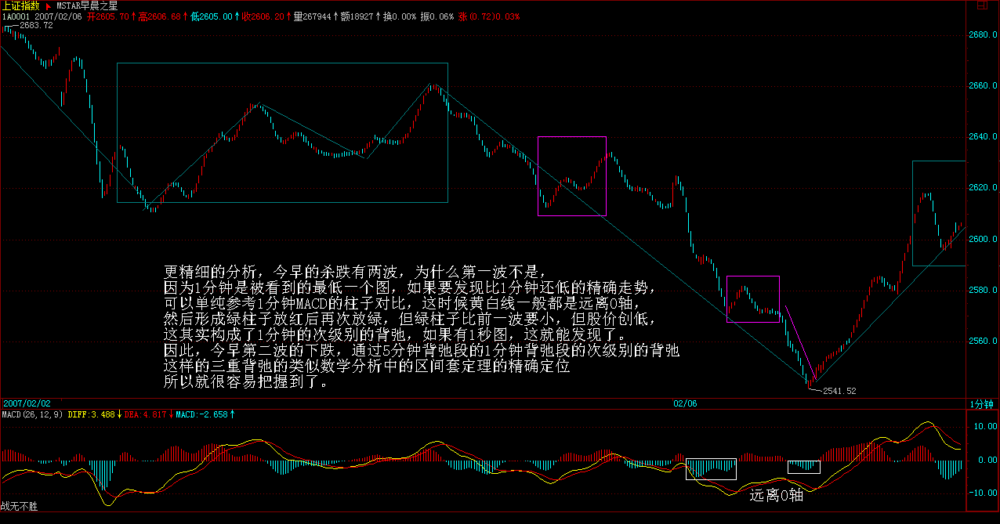
如果不明白区间套定理的，可以找一本数学分析的书看看。或者再研究一下第27课的内容。
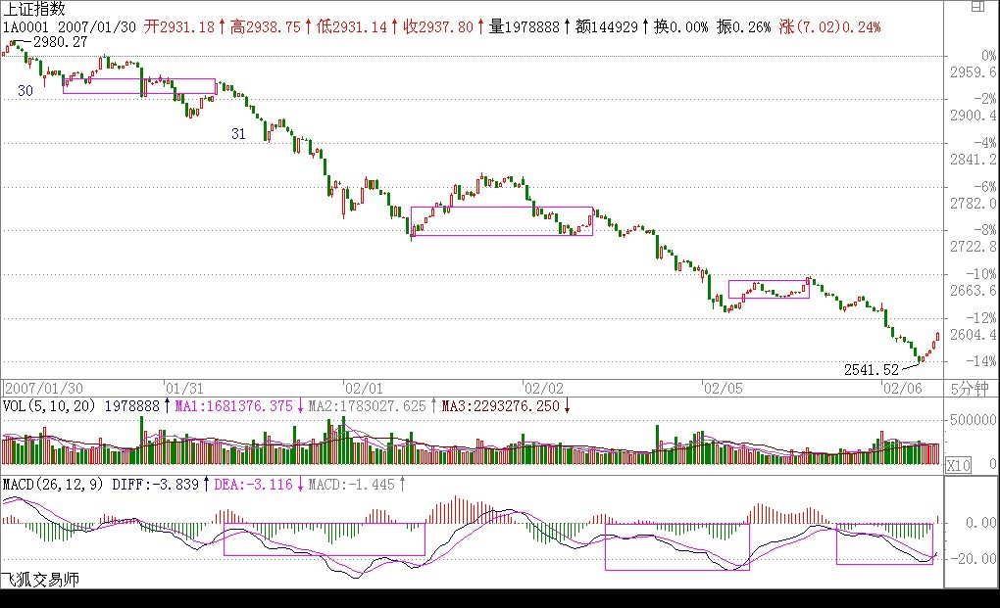
缠中说禅：
2007-02-06 22:21:08 大家注意了
现在对大家的要求是对背弛的精确定位，如果有可能，是可以达到1分钟的次级别的精确度的。这次大盘的下跌就是一个很好的例子。
方法很简单，例如这次是5分钟的下跌。因此在5分钟进入背弛段后，找1分钟相应段的背弛段，再找1分钟背弛段的背弛段，这样就可以精确定位了。
这个方法有点难度，尽量去理解吧，如果以前学过区间套定理的，应该很简单，或者先找一本数学书看看？
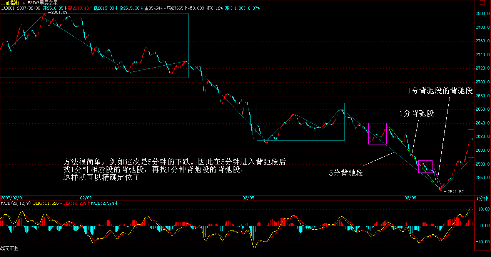
缠中说禅：
2007-02-06 22:26:51 补充一点
例如，在5分钟图上，2051330开始就是第三个中枢开始的下跌了，一般来说，一个下跌最多就是3、4个中枢，超过4个的极为罕见。
这时候就要看相应的从2051330开始的1分钟图。整个下跌必须有两个1分钟的中枢，显然02051410到02051436这一个只是第一个，所以其后的下跌，显然不可能构成趋势上的背弛，这同样也证明了为什么今早第一波不是的道理。
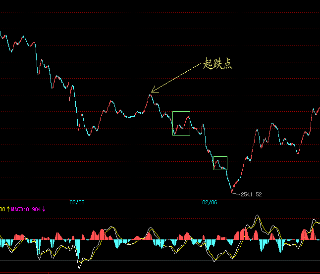
缠中说禅：
2007-02-02 15:20:44
[匿名] 乐土
2007-02-02 15:19:05
缠师:这一轮大牛市基本走完?
===
这轮牛市的第一段都没走完，什么叫基本走完？一个周线的调整很正常，又不是今天才说的。这个调整的级别最多就是去年5月到8月那个，8月以后是什么？
缠中说禅：
2007-02-02 15:31:56
[匿名] 乐土
2007-02-02 15:29:26
缠师,谢谢! 再请教:中信证券600030 今天是30分钟假背池吗?还要象猎人等背池买入点?谢
===
背驰就是背驰，没有什么假背驰，错了是因为你判断错了，最多错误都是发生在把盘整背驰转化为第三类买卖点给搞成背驰了。能把这关过了，你的水平可以上初中了。
缠中说禅：
2007-02-02 15:30:09
[匿名] 密码 2007-02-02 15:26:13
感觉涨停板对背驰的判断还是有干扰，比如今天600668开盘半小时那一段，在5分钟图上该看作背驰吗？
========
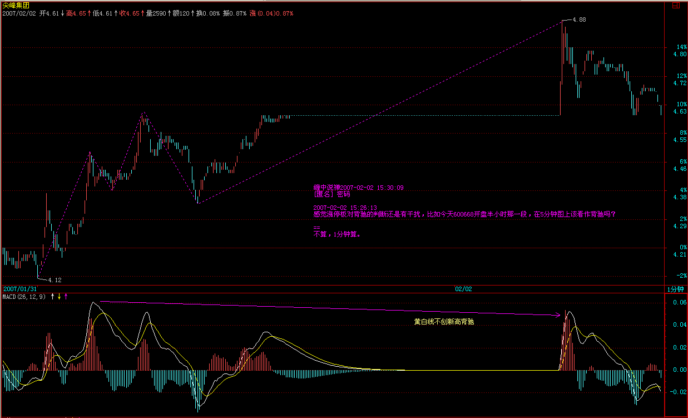
不算，1分钟算。
缠中说禅：
2007-02-02 15:33:25
[匿名] 东山
2007-02-02 15:27:35
说禅姑娘
关于一些缠中说禅定理的证明，有时间您能给写一下吗
==
有些定理，自己都可以证明，你能证明，就证明你的理解够深刻了，所以这是一个很好的练习。例如今天这个，就是很好的例子。
缠中说禅：
2007-02-02 15:38:17
[匿名] 咻咻
2007-02-02 15:25:35
请问600177今天1440是否形成了15分钟线的标准背驰,我的判断对吗,谢谢
==
错，只是一个比1分钟还低的背驰。
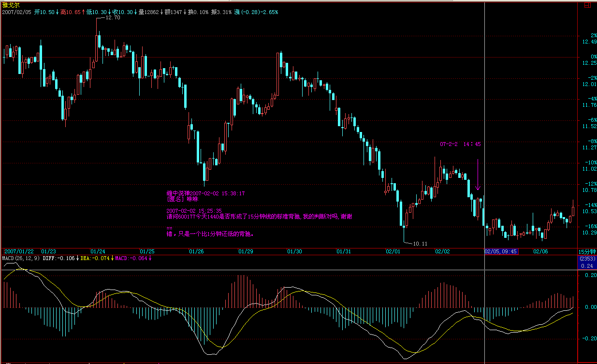
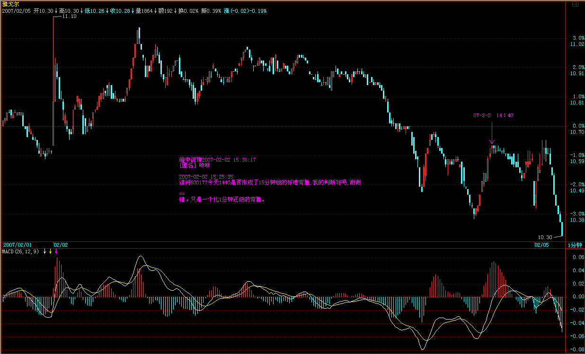
缠中说禅：
2007-02-02 15:47:13
[匿名] 惑
2007-02-02 15:42:33
请说一下中国人寿好么
==
这以前早说过了，去形成下跌的第二个中枢。该股在49元那次上涨背驰出来后，本ID就从来没提过了，因为该股要等待一个下跌的背驰出现，出现以后就可以重新介入了，那次，行情就小不了了，本ID也在等着，希望能见到30元附近的价位。中线，N年以后看，复权上100是没问题的，不过要耐心等待背驰的出现。
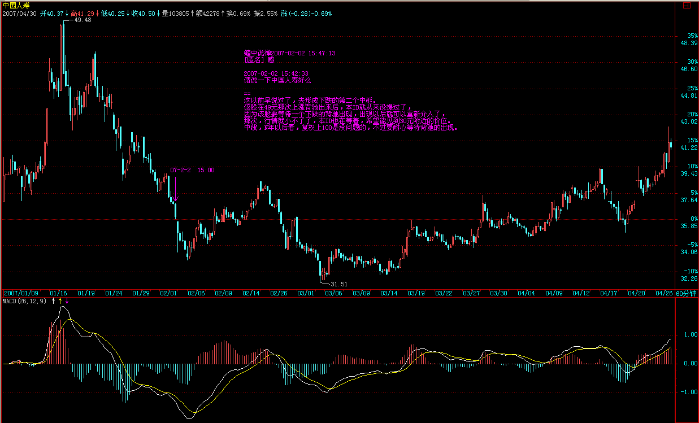
缠中说禅：
2007-02-02 15:49:51
[匿名] 夜雨
2007-02-02 15:44:21
美女姐姐，我总结一下今天的操作，卖都是对的，没找好买点，买都是错的，一定要看清楚了才下手，可今天买点好难找啊，
==
谁告诉你每天都一定有买点的？在强烈的趋势中，1分钟的买点有时候2、3天才有一个。不过5分钟的买点正形成中，对于大资金以及好股票，其实今天就可以开始部分介入了。
缠中说禅：
2007-02-02 15:55:38
[匿名] 小鸟
2007-02-02 15:50:16
妹妹，今天600331在下午13：50我觉得应该是背驰，但是却继续下跌，那么收盘前10分钟是背驰吧？但是虽然绿柱子比早上10点的高，均线却更低，这是怎么回事呀？
我还没上幼儿园呢，哭~
补充一下，是5分钟上的
==
背驰和均线没关系。说背驰，你首先要说级别，否则无从说起。
缠中说禅：
2007-02-02 15:58:03
[匿名] 炼铁设备
2007-02-02 15:54:58
帮帮我!
今天416一分钟 图:从2月1日的4.30---2月2日的4.73这个上下上的过程是产生了背驰?
==
有些敏感的股票，本ID就不评论了，免得被人说又当裁判又当运动员。自己去分析，或者互相分析。
缠中说禅：
2007-02-02 15:59:51
[匿名] 乐土
2007-02-02 15:57:57
缠师:我想既然学您的理论,就应该去另外选一只去磨练.您看中信600640或者深发展可以吗?我想象猎人一样等待第一买点的到来.今天,我几次想买,但想到与缠中说禅买点原则不符合,才没冲动.谢
==
不熟练的时候，最好找一些刚突破底部的，业绩不差的，这样安全点，
缠中说禅：
2007-02-02 16:02:18
[匿名] 锅贴
2007-02-02 15:57:01
靓女lz.我的600090惨了.帮我看看还能不能持好吗?谢谢
==
找一个买点进去弄短线，这有什么惨的？你技术好点，震荡就可以挣很多钱，怕什么？
缠中说禅：
2007-02-02 16:09:29
[匿名] 第一次实战
2007-02-02 15:55:45
今天终于鼓起勇气，按照lz理论进行了第一次实战。
目标是宝钢， 15分钟K线下午两点出现明显背驰，买入后宝钢马上强烈反弹，2％的幅度。转而观察低级别5分钟，1分钟K线，是否有卖点出现。可虽说无卖点出现，但是由于大盘忽然转弱，走势急转而下（5分钟1分钟K线均无出现卖点），5分钟再次出现男上位缠绕。按照lz所示，应严守纪律退出，这是是正好盈亏为0。但是初次实战，犹豫了一下，走势急转下跌，－2％，于是坚定退出。再次等待机会。
结语：任何走势都是无定的，严守纪律，给操作戴套。
===
你知道你的操作为什么有问题吗？首先，你对背驰的判断是错误的，宝钢15分钟根本没有背驰，更谈不上标准。黄白线都没拉回去，怎么可能有背驰？该背驰是典型的1分钟背驰，3波拉上去后就是一个完美的卖点，为什么？因为这卖点要看次级别的，而1分钟下面看不到，所以一般来说，3波上去就可以走，而且刚好碰到250的1分钟均线，最好的对冲出逃机会了。
好好总结，继续来。
==
谢谢楼主。学艺不精，继续努力。
==
注意，是涨的时候形成卖点，而不是跌下来再走。宁愿卖早了，不要卖晚了。特别是对冲。
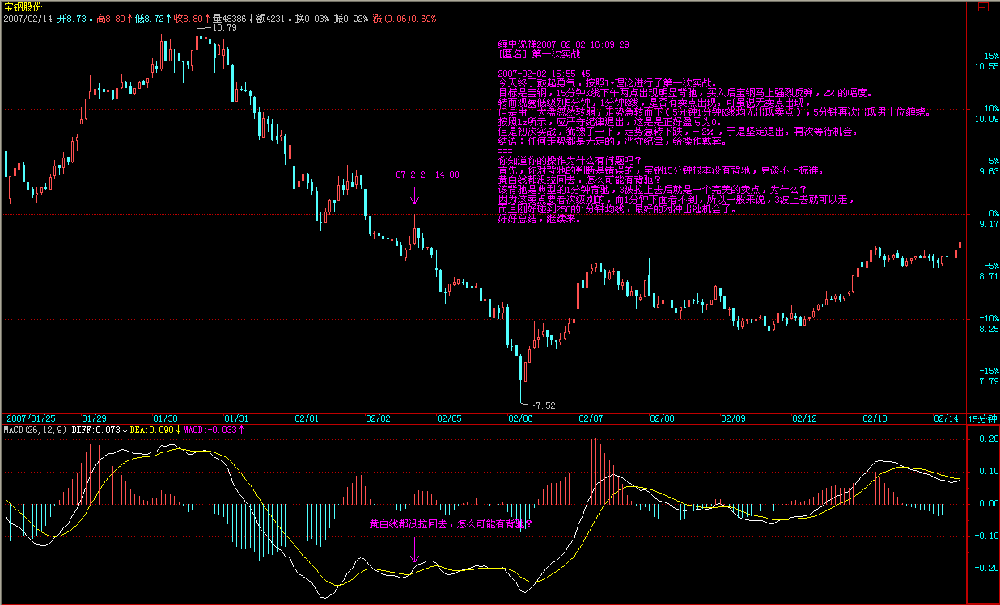
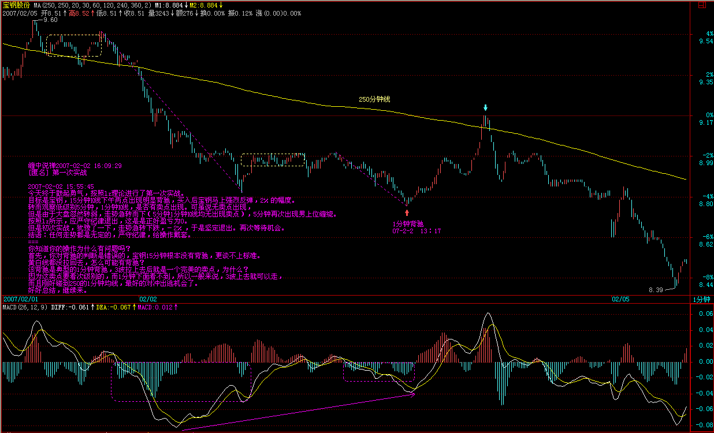
缠中说禅：
2007-02-02 16:27:08
[匿名] 小注
2007-02-02 16:19:50
禅主，601628是否30分钟背弛，36元我进了，请你给看看好吗！
==
错，黄白线没拉回0轴前是不会有背驰的。
最多是正在形成 1分钟的背驰。
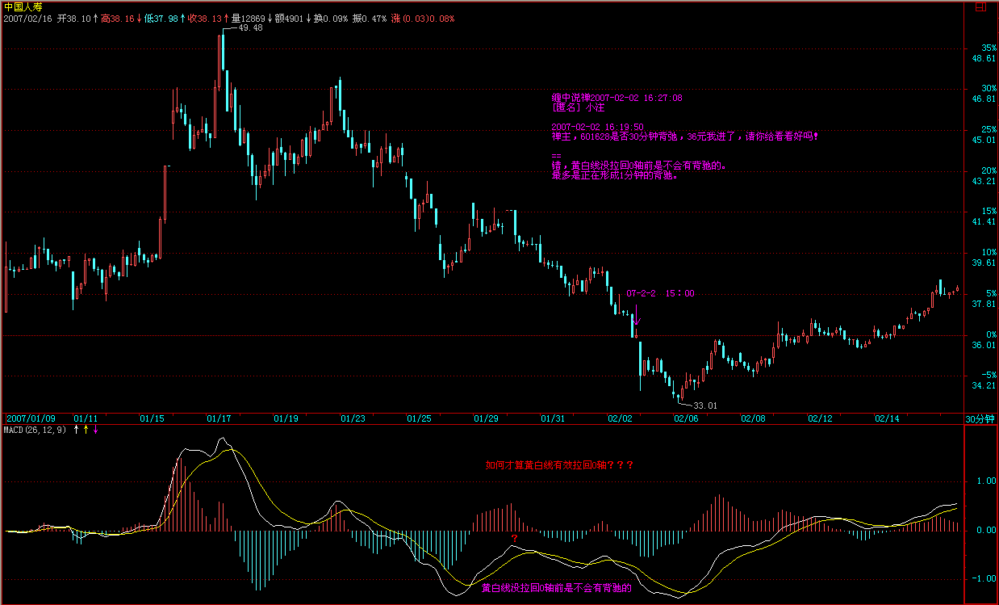
缠中说禅：2007-02-02 16:37:12
[匿名] 惑 2007-02-02 16:34:40
刚学习,得到一个体会:预测大盘或个股的高点低点没有意义,只要出现买卖点就可以操作,下跌趋势中的买点要比卖点级别高一些才有效,上升趋势中的卖点要比买点级别高.不知道对么?
另外0993今天下午13:55形成的卖点没有卖出,是不是错失了机会?
========
不是今天下午，而是31日，看看30分钟图。
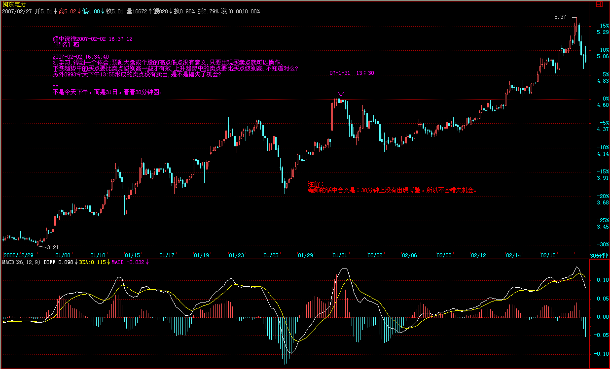
缠中说禅：
2007-02-02 16:40:56
[匿名] 小鸟
2007-02-02 16:23:54
请问我的理解对不对呀？
妹妹，600331在5分钟上在13：15到14：00只有一个中枢，所以还没形成趋势，需要继续下跌形成第二个中枢，有了趋势才能和前一个趋势对比，是不是这样呀？
===
5分钟中枢在昨天就形成了，010935到011410，，010935前面是一段，011410后面是一段，这两段就可以比较了。
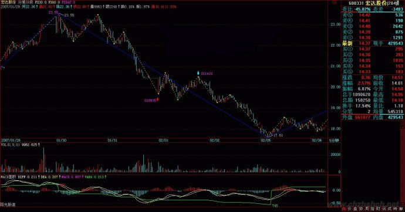
缠中说禅：
2007-02-02
16:43:56
[匿名] 小注
2007-02-02 16:40:50
禅主601628是15分钟黄白线拉回0轴一次！是否15分钟背弛！
==
这是一个条件，还有必要看其后股价新低后是否创新低，更精确的判断，可以参考5分钟的图。也就是这个背驰段什么时候结束。
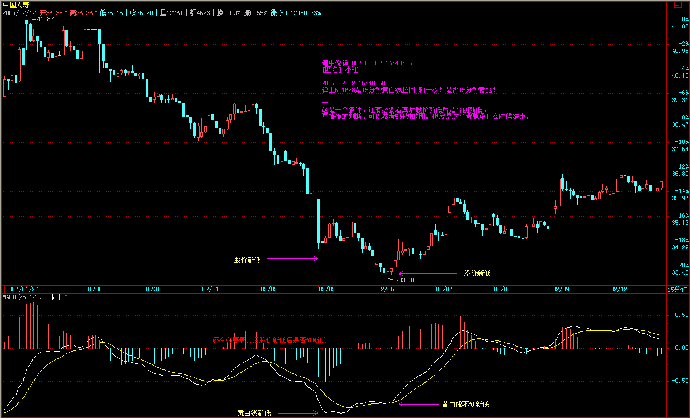
缠中说禅：
2007-02-02
16:46:22
[匿名] 巴索林
2007-02-02 16:43:38
LZ，请分析下600316把，我25元的成本，严重套牢了，怎么把啊
==
下面找一个买点摊一下，很快可以解套的。
缠中说禅：
2007-02-02
16:49:18
[匿名] 清
2007-02-02 16:00:50
先谢谢“本ID”对我昨天提出问题的回答。。非常谢谢
今日手上N多股票都暴跌，国安，水酒和管子都挨了一刀。水酒“本ID"是不是不要啦？
既然错过了卖点。也只能坐坐升降机了。既然牛市行情还会延伸，就先学点技术。
问点关于技术既问题：
背驰是否能理解成黄白线回抽 O轴的前后两段趋势，再MACD上映射既面积比较，当然还有黄白线是否也创出新低（高）的区别，而且回抽前的面积内会否也出线黄白线的回抽。就是指短时间内多次出现黄白线在0轴缠绕的情况？
谢谢。。呵呵。。
===
本ID不是早说了，前期一直在出消费类的换农业、军工等，消费类，中期调整后会创新高的。可以利用震荡把成本降低。
缠中说禅：
2007-02-02 16:55:18
周末了，找一个小时去找找自己吧，找不到自己，又怎能不让股票所转？转股票，而不要被股票转。
先下，周日中午开音乐会，再见。
缠中说缠：
2007-02-02
20:27:47
[匿名] 空读
2007-02-02 19:20:16
搞不清楚的一件事,上班族看日线和30分钟线就可以,看日线的买点进,30分钟线上的卖点卖了,再在30分钟级别的买点买回.
30分钟卖点出现后是否一定会出现30分钟级别的买点?
这次大盘是由一个60分钟级别的第一类卖点引起的下跌,回补的话是等60分钟的买点出现?还是等次一级别的买点?60分钟的次级别是30分钟还是15分钟?总不会是5分钟吧?
-----
日线是相对的大趋势，以日线买点进，看30分钟买卖点做短差降成本。30分钟卖点后当然有买点。
缠中说缠：
2007-02-03 13:16:16
[匿名] 小糊小舞
2007-02-03 10:18:57
楼主，有一个小问题请教下：在看你前面的炒股系列中，你回复别人的个股咨询时一会说看35日线、70线，中线你又说过看120周线，那么我想问下楼主眼里的短线、中线和长线周期分别是什么？背后选择的逻辑是什么，象你这么牛一定有自己的道理，希望不要简单地以“个人喜好”来概括，谢谢！
－－－－－－－－－－－－－－－－－
均线只是个参考，如同MACD，后面的中枢理论是关键，有了他，均线和MACD都只是辅助工具
缠中说禅：
2007-02-04 14:40:55
北京的天气真有点恐怖了，再过20年，我们还有冬天吗？
一个10几度的北京冬天，外面两大群鸟儿在较劲。天，虽然有点灰蒙蒙，但阳光依然在其中散发。
冰面上已经不能去了，河柳仿佛要发芽了。
在这样一个古怪的冬日，本ID还是继续到河边，去倾听那冰层的呻吟吧。
先下，再见。
缠中说缠：
2007-02-04 20:23:39
[匿名] 晕
2007-02-04 19:50:55
另外，有可能某级别没出现中枢，它之上的级别却出现了，有这种可能性吗？
------------
不可能，“之上级别”出现中枢，则由“之上级别”的次级——当前级别的三段连续走势构成之上级别中枢。
当前级别的走势至少有一个当前级别的中枢
缠中说禅：
2007-02-05 15:25:03
注意，像416、777、998、343这几个股票，低位没买的，千万别追高，本ID的原则很简单，该起来就起来，该砸就砸，图形说话。
至于什么999，你看现在图形上哪里有背驰，没有背驰又什么能起来？现在的下跌很正常，走势必完美，这是中枢形成的第三段。

缠中说禅：
2007-02-05 15:49:00
[匿名] 夜雨
2007-02-05 15:31:07
美女姐姐，觉得600028和00079，600011有戏吗，觉得跌很多了，想做个差价，可买点好象没找对，不对，没做成，现在套5%，
==
5%不算什么，一反弹就开始挣钱了。
给大家一句话，因为大家的水平参差，那就按自己的水平，找看得懂的图形操作。有些特别简单又标准的图形，先看这些操作，那些因为你的看图水平还达不到的，就避开，这样是一个比较可行的办法。随着你的水平提高，能处理的图形就越来越多。
缠中说禅：
2007-02-05 15:54:28
[匿名] asdf
2007-02-05 15:46:02
缠女王， 有时候在下跌趋势上， 一波比一波MACD绿柱子都短， 面积都小， 有时候第二波比第一波小时就认为是背驰， 但是后面还有几波， 还是跌， 怎么找到最后一波， 确认那个是背驰啊？
==
MACD只是辅助，不是全部。你首先要分清楚趋势，如果是趋势造成的盘整（娇：他的意思是指标盘整），就一定要先确定背驰段，如果30分钟是急剧下跌的，1分钟的背驰又有多大用？关键是先找到大一点级别的背驰段，然后再用小级别的背驰来找精确买点，这才是有用的。像这次大盘，你首先确定目前已经进入5分钟的背驰段，然后再按1分钟找买点，这才精确。当然，最好就是在30分钟的背驰段用5分钟找买点，短线这样就比较安全了。
缠中说禅：
2007-02-05 15:56:16
[匿名] 站在子弹上
2007-02-05 15:51:01
谢谢楼主的解答。
我自己的感觉呢，就是第一段趋势上去的力度越大，在第二段中枢确立的时候，然后突破中枢再回抽确认之后为最好的一个介入点，后面的幅度应该也比较大，速度应该也不差吧。
请楼主点评
===
好好去研究一下第三类买点。但对小级别来说，第三类买点有一定风险，不是买了不涨，而是t+1涨了不一定能抛。
缠中说禅：
2007-02-05 16:18:22
[匿名] 职业轿夫
2007-02-05 15:10:37
为什么都是军工概念的票，600151和姐姐的股差距就这么大呢！！姥姥不疼，舅舅不爱的！！！姐姐啊，你就要他一晚上吧！
==
没事的，以后都会跟上来的，不过里面的人比较温柔，不像本ID那么穷凶极恶。
缠中说禅：2007-02-05 16:02:07
[匿名] 插班生 2007-02-05 15:50:40
[匿名] asdf 2007-02-05 15:46:02
缠女王， 有时候在下跌趋势上， 一波比一波MACD绿柱子都短， 面积都小， 有时候第二波比第一波小时就认为是背驰， 但是后面还有几波， 还是跌， 怎么找到最后一波， 确认那个是背驰啊？
--------
我也有这个问题,今天的宝钢就的5分钟是这样的情况,请楼主指点
========
前面两个显然都不是，你首先要形成趋势，也就是要有两个中枢。最后一个出现后，就意味着进入背驰段，也就是说进入5分钟的底部区域。然后就找1分钟的看精确买点。
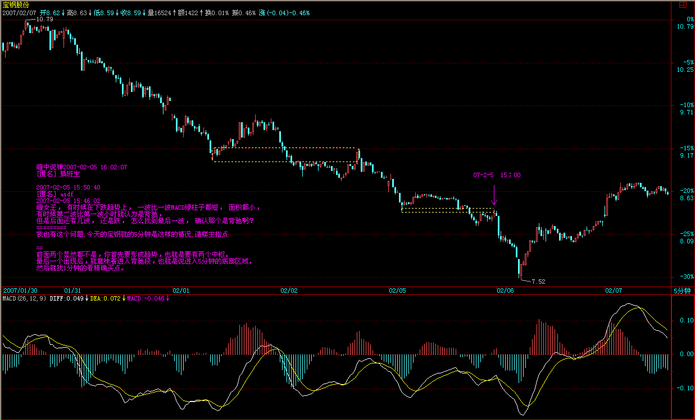
缠中说禅：
2007-02-05 16:21:26
[匿名] 清
2007-02-05 16:12:02
怎么不提“管子”了？？？
==
778没什么事，走得很稳的，这股票，本ID本来是用来当预备队用的，万一出什么事情就要兑现了，不过目前还好，本ID其他地方不断产生利润，所以才又有钱开了000938，不过这股票千万别瞎抢，本ID是中线阻击，看着图形悠着点。
缠中说禅：
2007-02-05 16:30:59
[匿名] 糊涂
2007-02-05 15:59:04
缠姐姐 你好
600879(火箭股份)我在昨天15分钟线的背弛点1045和1430都买了,可你说那只是盘整背弛.那今天0945是否是背弛?因为已经形成两个中枢011000到011415 和021045到021500这两个中枢
今天我在 5分钟线1405的背弛位全部卖出.
不知我的判断是否正确?
卖出了,我又感觉买不回了,我是否还有买点?
==
你的理解错误了，首先盘整背驰就不一定比背驰差，例如第二类或第三类买点的盘整背驰，就不会太差。盘整背驰一定要防止变成第三类买卖点，这要配合大级别综合看。例如一个30分钟上的下跌刚开始破位，那5分钟上的盘整背驰就转化为第三类卖点 的几率就99%了。所以这种盘整背驰，一般都没必要参与。如果30分钟是刚开始上涨的，5分钟向下的盘整背驰反而是一个好的买点了。对该股，站在周线图上看，你看看现在的回试是什么？不能光看一个级别的，眼光要全面点。
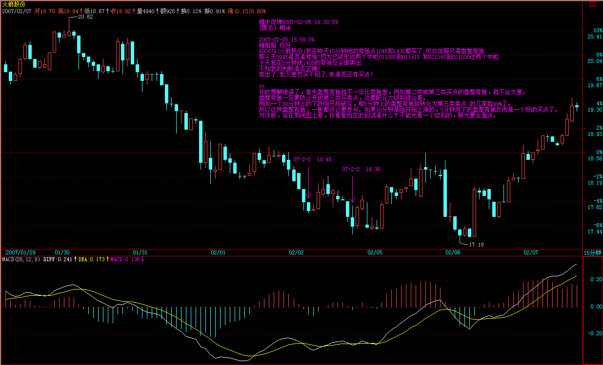
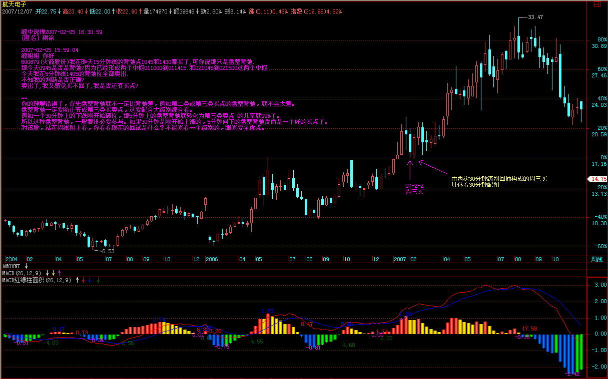
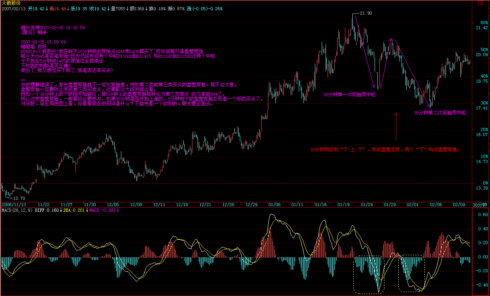
缠中说禅：
2007-02-05 16:35:28
[匿名] 中间体
2007-02-05 16:29:46
缠姐, 你要不回答, 我就叫你缠佬佬.
------------------------------
缠姐, 关于背驰的ABC三段, 有时候B段反向运动力度太大, 造成MACD回抽过分,(中枢级别过高??) 图型就很难看懂, 是不是这就会变成一个大中枢呢??
==
如果B段不是回抽0轴附近，就根本不满足条件，否则任意三段都可以用MACD判断背驰了，那不乱套了？一定要先满足条件。
------------------------------------
是回抽0轴了, 但回抽过分是不是又变成大中枢呢??
===
回抽过分是一个模糊的概念，操作不能模糊，模糊了就出大毛病了。
缠中说禅：
2007-02-05 16:37:51
[匿名] ataoo0
2007-02-05 16:26:09
000938????今天楼主怎么一反常态，直接暴料了？！
==
以前也说得很明显呀，像药、什么浙江人那些，一说完，几乎马上就人猜到，既然这样，那还不如本ID自己说了，别让那些自以为猜谜很厉害的人得意。
缠中说禅：
2007-02-05 16:41:19
[匿名] 小注
2007-02-05 16:25:23
601628看着真要奔30吗
==
30，不错，本ID就可以开始重新介入了。
缠中说禅：
2007-02-05 16:42:22
[匿名] 恒旧常新
2007-02-05 16:40:43
请问老师一个中枢的问题:形成中枢的A\B\C三段中,B段的高点(上涨中枢中)可以比A段的高点高吗?下跌中枢中,B段的低点可以比A段的低点低吗?
==
当然可以，什么情况都可以，只要这三段有重叠就可以。
缠中说禅：
2007-02-05 16:59:23
[匿名] 缠文观止 2007-02-05 16:41:46
这么快就到第三页了，我把问题再贴一遍啊，方便缠MM看。
－－－－－－－－－－－－－－－－－－
“缠中说禅走势中枢定理三”：某级别“缠中说禅走势中枢”的破坏，当且仅当一个次级别走势离开该“缠中说禅走势中枢”后，其后的次级别回抽走势不重新回到该“缠中说禅走势中枢”内。
这定理三中的两个次级别走势的组合只有三种：趋势 +盘整，趋势+反趋势，盘整+反趋势。
趋势 +盘整中的趋势中的价值中枢与盘整中的价值中枢的级别是不同的，后者更高。
如果以一个次级别的盘整类型离开中枢，返回当然不可能也是盘整类型，否则就构成一个大级别的盘整类型，这就与原中枢维持的前提矛盾了。
――――――――――――――――――
以上是原文摘录。
我的疑问是：两个次级别走势的组合 “趋势＋盘整”，盘整的价值中枢如果比趋势价值中枢高的话，又怎么能叫两个次级别走势的组合呢？这里的盘整是次级的吗？
==
只要走势走出来的，都是可能的组合，这很正常，至于这些组合构成什么意义的图形，那是另外的问题。这两者不是一个概念。
还有对“缠中说禅走势分解定理一”：任何级别的任何走势，都可以分解成同级别“盘整”、“下跌”与“上涨”三种走势类型的连接。
这个定理能不能再具体说明一下，或证明一下，感觉总有些迷惑。特别是 “同级别”这个定语的修饰范围？定理中提到的“下跌”与“上涨”走势类型一定是趋势吗？
===
上涨、下跌当然都是趋势。至于同级别，就是有相同的中枢。至于两个相同的中枢叠加一起，可能就构成中枢的扩张等情况。一个大级别的盘整，同样可以分解成小级别的走势类型的连接。
任何级别的图形，如果用该级别的中枢去分类，不到该中枢的，那必然有后面的走势使得中枢的级别达到该级别。超过该级别的，一定能分级别成该级别中枢的组合，这应该不难理解。所以，如果用该级别的上涨、下跌、盘整来看，那就有定理一了。
缠中说禅：
2007-02-05 17:02:00
[匿名] 诚诚 2007-02-05 16:56:03
LZ,你好!请问钢铁股还有戏吗?我买的000898,1月30日30分钟的背弛没空抛(是背弛吧?)结果跌下来一直就舍不得,因为你说钢铁是去年的有色!还有600386,一直把握不住它的波段,请教,谢谢!
==
钢铁股不是已经说了，是去年的有色，你看看去年有色是怎么走的？600386是钢铁股？波段只按技术，和个股基本面无关。
缠中说禅：
2007-02-05 17:03:26
[匿名] 糊涂 2007-02-05 16:52:25
缠中说禅
2007-02-05 16:30:59
[匿名] 糊涂 2007-02-05 15:59:04
缠姐姐 你好
600879(火箭股份)我在昨天15分钟线的背弛点1045和1430都买了,可你说那只是盘整背弛.那今天0945是否是背弛?因为已经形成两个中枢011000到011415 和021045到021500这两个中枢
今天我在 5分钟线1405的背弛位全部卖出.
不知我的判断是否正确?
卖出了,我又感觉买不回了,我是否还有买点?
==
你的理解错误了，首先盘整背驰就不一定比背驰差，例如第二类或第三类买点的盘整背驰，就不会太差。盘整背驰一定要防止变成第三类买卖点，这要配合大级别综合看。例如一个30分钟上的下跌刚开始破位，那5分钟上的盘整背驰就转化为第三类卖点 的几率就99%了。所以这种盘整背驰，一般都没必要参与。如果30分钟是刚开始上涨的，5分钟向下的盘整背驰反而是一个好的买点了。对该股，站在周线图上看，你看看现在的回试是什么？不能光看一个级别的，眼光要全面点。
谢谢缠姐姐!我有点明白了,但它也是军工概念呀,没得搞吗?
==
怎么会没得搞，你看他的周线图，是没得搞的图吗？
缠中说缠：
2007-02-05 22:28:14
[匿名] 同学 2007-02-05 22:10:15
缠中说禅走势分解定理二“：任何级别的任何走势类型，都至少由三段以上次级别走势类型构成。
此定理二中三段以上次级别走势类型 怎理解?说的是??
请同学门帮忙???谢谢
－－－－－－－－－－－－－－
任何级别走势类型，至少有一个中枢，这个中枢至少由3段连续次级别走势的重叠构成。
所以，盘整走势至少有三段以上次级别，那趋势至少有两个中枢，就至少有六段次级别走势类型构成了。
缠中说缠：
2007-02-05 23:29:57
[匿名] 学习中 2007-02-05 23:17:14
[匿名] 缠中说缠 2007-02-05 22:28:14
任何级别走势类型，至少有一个中枢，这个中枢至少由3段连续次级别走势的重叠构成。
所以，盘整走势至少有三段以上次级别，那趋势至少有两个中枢，就至少有六段次级别走势类型构成了。
－－－－－－－－－－－－－－
那有没有可能更少呢？我一直想不通：比如， ABC构成一个中枢，CDE构成另一个同向的，这样只要5个. 另外，BCD也可能另外构成一个反向的，该如何处理？
－－－－－－－－－－－－－－－－－
这样理解是错的。
注意，两个中枢不可能共用一个次级走势。
缠中说禅：2007-02-05 17:10:54
[匿名] 炼铁设备 2007-02-05 15:47:49 缠中说禅 2007-02-05 15:25:03
注意，像416、777、998、343这几个股票，低位没买的，千万别追高，本ID的原则很简单，该起来就起来，该砸就砸，图形说话。
至于什么999，你看现在图形上哪里有背驰，没有背驰又什么能起来？现在的下跌很正常，走势必完美，这是中枢形成的第三段
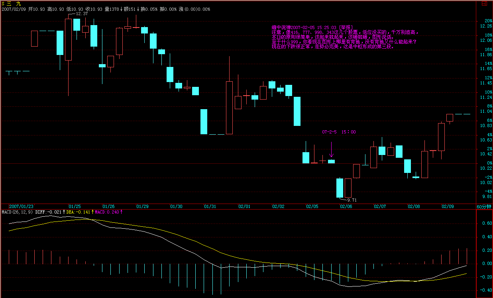--------
416在上午4.20时，因委托系统无法登陆，错过了，下午4.35时试探性地买了点。在999上损失惨重，777、998、343价太高了，不敢再冒险了。
========
不能这样操作，416 3元多不买，怎么跑到4元多了才买？这样不是申请套牢吗？短线不熟悉的，最好就先别弄短线了，先学好不追高。如果3元多没买416的，根本就没必要买了，有的反而是要多弄短差，把成本降下去。
本ID的理论最大的优点就是灵活，如果一时学不会，就拿着999等除权吧。
缠中说禅：2007-02-05 17:11:44 今晚有朋自远方来，要先下了，再见。 |